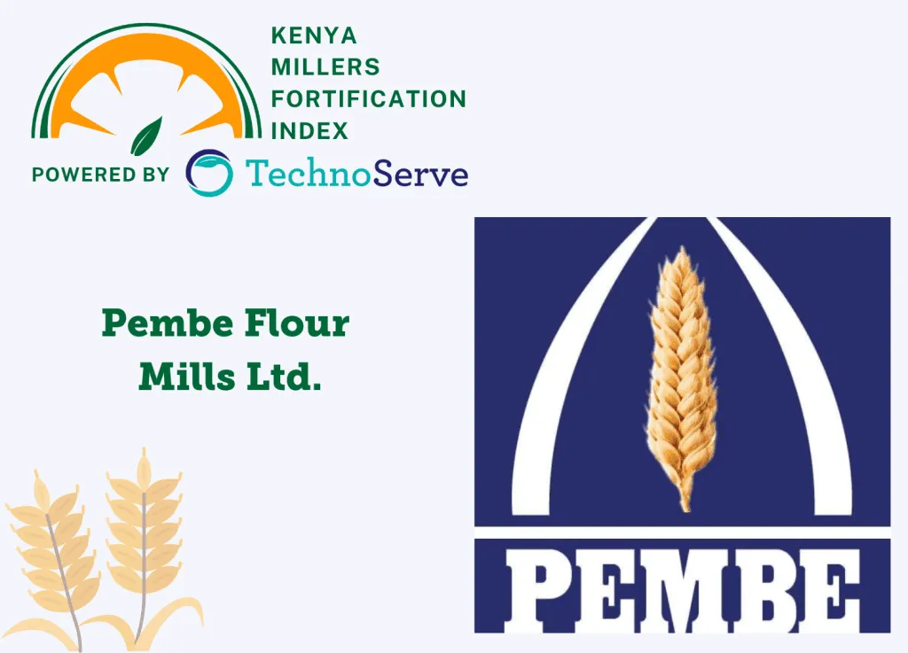

Pembe
Flour Millers
Our story, our mission, and the people behind the flour.

Pembe Flour Mills Ltd was founded in 1989 in a small section of Nairobi Industrial Area., Pembe Flour Millers started with a simple mission: bring high-quality, affordable flour to Kenyan families and businesses.
What began as a small community mill has grown into a trusted brand, supplying wheat flour, maize flour, and animal feed to homes, restaurants, and farms across the region.

Pembe Flour Mills Ltd is committed to producing and supplying superior flour products that contribute to the health and well-being of consumers, while exceeding customer expectations through continuous improvement, innovation, and sustainable practices.
We work closely with local farmers, ensuring fair prices for their grain and a shorter, fresher supply chain for our customers.
We minimize waste and work with local farmers to reduce our carbon footprint.
Proudly Kenyan. We reinvest in Nairobi County and the farmers who supply us from the neighbouring countries and all over the country.
Every bag passes rigorous quality checks before it reaches your kitchen.
Honest pricing, honest ingredients. You always know what you're getting.